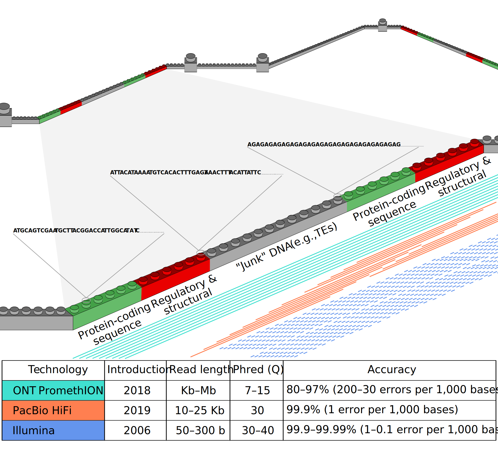
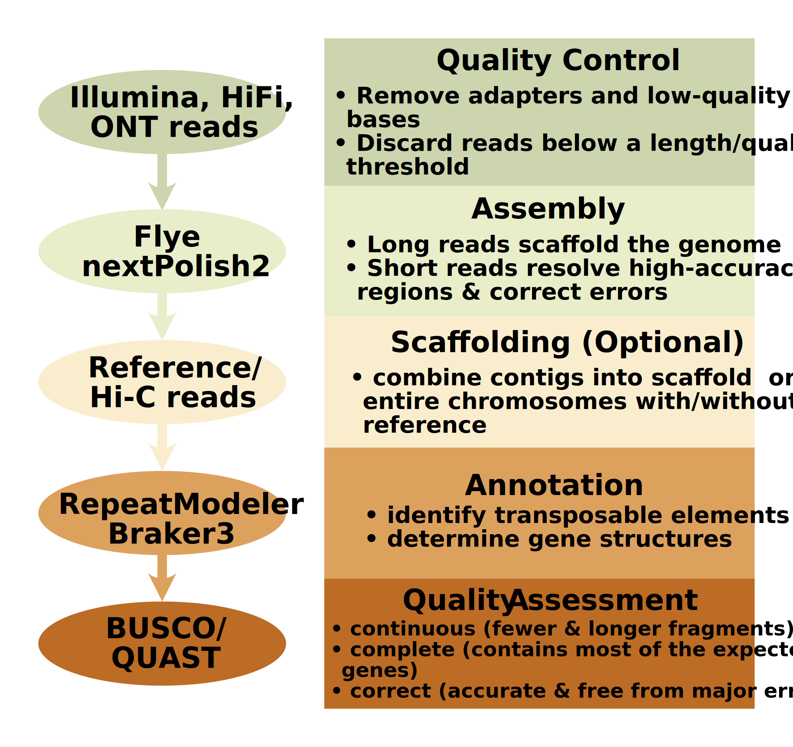
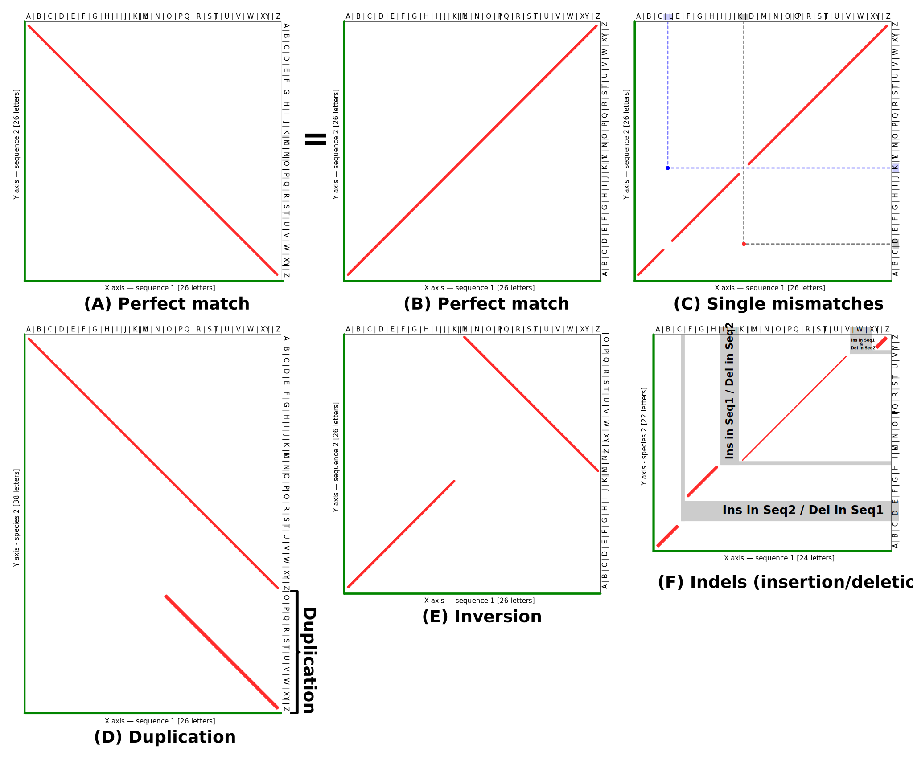
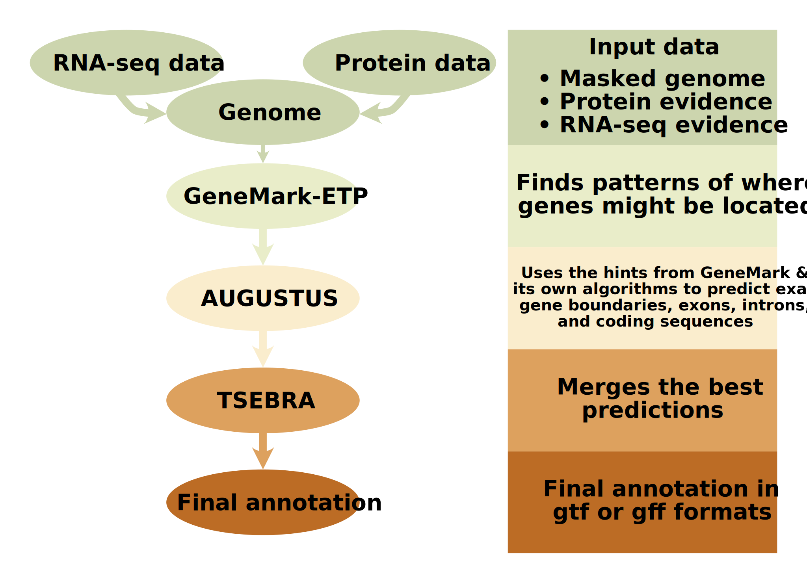
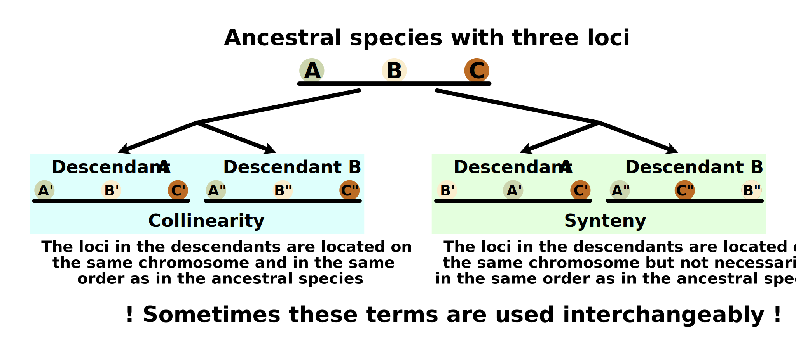

Quality check and genome assembly using Illumina, ONT, HiFi, and Hi-C data
Created by Evgenii
Baiakhmetov
[I] Preface
In a nutshell
This tutorial is, to some extent, a simplified version of my previous tutorial on chromosome-level scaffolding and annotation of the diploid plant Arabidopsis thaliana (2n=2x=10). In this version, I include a Quality Check (QC) assessment step and employ an approach for identifying syntenic blocks commonly used in comparative genomics. Additionally, I have downsized the dataset to include only the smallest chromosome, Chr4 (ca. 22.2 Mbp), which should reduce the overall time required to complete the analysis. The tutorial is part of the workshop Introduction to Bioinformatics and OMICs Data Analysis, conducted at XTBG from February 10–14, 2025 (workshop leader: Dr Guillem Ylla).
Please note that all data used here was produced by Wang B et al., 2021. Additionally, please be aware that this tutorial does not aim to reproduce all analyses from the aforementioned article in detail.
Learning outcomes
After completing this tutorial, you will be able to:
- perform a quality check of the raw sequencing data.
- assemble a genome of interest using data produced by second- and third-generation sequencing technologies, including Illumina, Oxford Nanopore Technologies (ONT), and Pacific Biosciences Circular Consensus Sequencing (CCS) reads.
- scaffold assembled contigs to the scale of full chromosomes using a reference genome.
- scaffold assembled contigs to the scale of full chromosomes using Hi-C data.
- identify, annotate and mask transposable elements.
- annotate genomes using RNA-Seq and protein homology information.
- visualise the results.
Keywords
Bioinformatics, Quality Check, ONT sequencing, HiFi sequencing, Illumina sequencing, Hi-C sequencing, RNA sequencing, genome assembly, genome annotation, Synteny, data visualisation.
[II] Conda & sequencing data
Conda, software, and packages
IMPORTANT! Please refer to the aforementioned tutorial on creating and setting up conda environments, as well as package and software installation. Additionally, you may consider switching to mamba over conda.
Downloading raw sequence data
A subset of the Illumina, ONT, HiFi, and Hi-C reads was privately provided to the workshop participants. The files are now available for download through the Zenodo repository.
Subsampling workflow
To reproduce all the steps for data subsampling while keeping only the reads aligned to Chromosome 4, follow the steps below.
[1] Dataset
First, create directories for Illumina, RNA-Seq, Hi-C, HiFi, and ONT data:
mkdir Illumina RNAseq HiC HiFi ONT
Then, download the following files:
- Illumina folder:
nohup wget ftp://download.big.ac.cn/gsa/CRA004538/CRR302670/CRR302670_f1.fastq.gz > CRR302670_f1.out 2>&1 & nohup wget ftp://download.big.ac.cn/gsa/CRA004538/CRR302670/CRR302670_r2.fastq.gz > CRR302670_r2.out 2>&1 &
- RNAseq folder:
nohup wget https://sra-pub-run-odp.s3.amazonaws.com/sra/SRR3581356/SRR3581356 > wget_SRR3581356.out 2>&1 & # root nohup wget https://sra-pub-run-odp.s3.amazonaws.com/sra/SRR3581693/SRR3581693 > wget_SRR3581693.out 2>&1 & # flower nohup wget https://sra-pub-run-odp.s3.amazonaws.com/sra/SRR3581681/SRR3581681 > wget_SRR3581681.out 2>&1 & # leaf nohup wget https://sra-pub-run-odp.s3.amazonaws.com/sra/SRR3581705/SRR3581705 > wget_SRR3581705.out 2>&1 & # internode nohup wget https://sra-pub-run-odp.s3.amazonaws.com/sra/SRR3581706/SRR3581706 > wget_SRR3581706.out 2>&1 & # seed nohup wget https://sra-pub-run-odp.s3.amazonaws.com/sra/SRR3581708/SRR3581708 > wget_SRR3581708.out 2>&1 & # silique nohup wget https://sra-pub-run-odp.s3.amazonaws.com/sra/SRR3581703/SRR3581703 > wget_SRR3581703.out 2>&1 & # pedicel
- HiC folder:
nohup wget ftp://download.big.ac.cn/gsa/CRA004538/CRR302669/CRR302669_f1.fastq.gz > CRR302669_f1.out 2>&1 & nohup wget ftp://download.big.ac.cn/gsa/CRA004538/CRR302669/CRR302669_r2.fastq.gz > CRR302669_r2.out 2>&1 &
- HiFi folder:
nohup wget ftp://download.big.ac.cn/gsa/CRA004538/CRR302668/CRR302668.fastq.gz > CRR302668.out 2>&1 &
- ONT folder:
nohup wget ftp://download.big.ac.cn/gsa/CRA004538/CRR302667/CRR302667.fastq.gz > CRR302667.out 2>&1 &
[2] Chromosome subsetting
Download the reference genome:
nohup wget https://download.cncb.ac.cn/gwh/Plants/Arabidopsis_thaliana_AT_GWHBDNP00000000/GWHBDNP00000000.genome.fasta.gz > Arabidopsis_genome.out 2>&1 &
Unzip the compressed file:
unpigz -k -p 4 GWHBDNP00000000.genome.fasta.gz
Check the headers:
grep ">" GWHBDNP00000000.genome.fasta > GWHBDNP00000000.genome_Chr_list.txt && cat GWHBDNP00000000.genome_Chr_list.txt
It should look like this:
| GWHBDNP00000001 | Chromosome 1 | Complete=F | Circular=F | OriSeqID=chr1 | Len=32659241 |
| GWHBDNP00000002 | Chromosome 2 | Complete=F | Circular=F | OriSeqID=chr2 | Len=22712559 |
| GWHBDNP00000003 | Chromosome 3 | Complete=F | Circular=F | OriSeqID=chr3 | Len=26161332 |
| GWHBDNP00000004 | Chromosome 4 | Complete=F | Circular=F | OriSeqID=chr4 | Len=22250686 |
| GWHBDNP00000005 | Chromosome 5 | Complete=F | Circular=F | OriSeqID=chr5 | Len=30093473 |
Next, we will retain only the shortest chromosome:
awk -v chr=4 ' BEGIN {FS="\t"} $1 ~ />GWHBDNP/ && $2 == "Chromosome " chr {print; flag=1; next} $1 ~ />GWHBDNP/ && $2 != "Chromosome " chr {flag=0} flag ' GWHBDNP00000000.genome.fasta > Arabidopsis_GWHBDNP00000000_chr4.fasta
Additionally, let’s index the reference genome:
minimap2 -d Arabidopsis_GWHBDNP00000000_index.mmi GWHBDNP00000000.genome.fasta
And Chromsome 4 to speed up subsequent alignments:
hisat2-build Arabidopsis_GWHBDNP00000000_chr4.fasta hisat2_Arabidopsis_GWHBDNP00000000_chr4
[3] Trimming and alignment
Next, we will remove adapter sequences and retain only high-quality reads.
Illumina DNA data
Trimming:
trim_galore \ --cores 8 \ --paired \ --quality 30 \ --length 100 \ --clip_R1 15 \ --clip_R2 15 \ --three_prime_clip_R1 10 \ --three_prime_clip_R2 10 \ --dont_gzip \ CRR302670_f1.fastq.gz CRR302670_r2.fastq.gz
Alignment (do not forget to specify the path for the -x parameter and create the Temp_samtools folder):
nohup sh -c 'hisat2 \ -p 44 \ --reorder \ --no-mixed \ --no-discordant \ --no-unal \ --sam-no-qname-trunc \ -x hisat2_Arabidopsis_GWHBDNP00000000_chr4 \ -1 CRR302670_f1_val_1.fq \ -2 CRR302670_r2_val_2.fq \ -S - | \ samtools view -@ 44 -Sb -F 4 - | \ samtools sort -@ 44 -m 10G -T /Temp_samtools -o DNA_Illumina_sorted.bam - && \ samtools fastq -@ 22 \ -1 DNA_Illumina_chr4_R1.fastq \ -2 DNA_Illumina_chr4_R2.fastq \ DNA_Illumina_sorted.bam' &
Subsampling. We will keep only 75% of the reads:
for suffix in R1 R2; do seqtk sample -s 77 "DNA_Illumina_chr4_${suffix}.fastq" 0.75 > "DNA_Illumina_chr4_subset_${suffix}.fastq" done
Illumina RNA data
Convert the SRA files into FASTQ:
for srr_id in SRR3581706 SRR3581708 SRR3581693 SRR3581681 SRR3581356 SRR3581705 SRR3581703; do fasterq-dump --threads 44 --split-files "$srr_id" done
Trimming:
parallel -j 4 "nohup trim_galore -q 20 --cores 4 {}.fastq > {}_trim.log 2>&1 &" \ ::: SRR3581706 SRR3581708 SRR3581693 SRR3581681 SRR3581356 SRR3581705 SRR3581703
Alignment (do not forget to specify the path for the -x parameter):
SAMPLES=(SRR3581706 SRR3581708 SRR3581693 SRR3581681 SRR3581356 SRR3581705 SRR3581703) for SAMPLE in "${SAMPLES[@]}"; do nohup bash -c " hisat2 -p 12 --no-unal --sam-no-qname-trunc \ -x hisat2_Arabidopsis_GWHBDNP00000000_chr4 \ --rna-strandness F \ -U '${SAMPLE}_trimmed.fq' \ -S '${SAMPLE}.sam' && \ samtools view -@ 12 -Sb -F 4 -q 20 '${SAMPLE}.sam' > '${SAMPLE}.bam' && \ samtools sort -@ 12 -m 10G -o '${SAMPLE}_RNA_Illumina_chr4_subset.bam' '${SAMPLE}.bam' && \ samtools fastq -@ 12 '${SAMPLE}_RNA_Illumina_chr4_subset.bam' > '${SAMPLE}_RNA_Illumina_chr4_subset.fastq' && \ rm -f '${SAMPLE}.sam' '${SAMPLE}.bam' " > "${SAMPLE}.log" 2>&1 & done
Illumina Hi-C data
Trimming:
trim_galore \ --cores 8 \ --paired \ --quality 30 \ --length 100 \ --clip_R1 15 \ --clip_R2 15 \ --three_prime_clip_R1 10 \ --three_prime_clip_R2 10 \ --dont_gzip \ CRR302669_f1.fastq.gz CRR302669_r2.fastq.gz
Alignment (do not forget to specify the path for the -x parameter and create the Temp_samtools folder):
nohup sh -c 'hisat2 -p 22 --reorder --no-mixed --no-discordant --no-unal --sam-no-qname-trunc \ --no-spliced-alignment \ -x hisat2_Arabidopsis_GWHBDNP00000000_chr4 \ -1 CRR302669_f1_val_1.fq \ -2 CRR302669_r2_val_2.fq \ -S - | \ samtools view -@ 22 -Sb -F 4 - | \ samtools sort -n -@ 22 -m 10G -T /Temp_samtools -o Hi_C_Illumina_chr4.bam - && \ samtools fastq -@ 22 \ -1 Hi_C_Illumina_chr4_R1.fastq \ -2 Hi_C_Illumina_chr4_R2.fastq \ Hi_C_Illumina_chr4.bam' &
PacBio HiFi data
Trimming:
cutadapt \ -j 20 \ -a "AATGTACTTCGTTCAGTTACGTATTGCT" \ -a "AGAGTACATGGGAGTTGGTTATGGTAAT" \ --quality-cutoff 30 \ -m 5000 \ -M 30000 \ -o HiFi_trimmed.fastq.gz \ CRR302668.fastq.gz
Alignment (do not forget to create the Temp_samtools :
minimap2 -ax map-hifi -t 44 Arabidopsis_GWHBDNP00000000_chr4.fasta HiFi_trimmed.fastq.gz | \ samtools view -@ 22 -Sb -F 4 -F 256 -F 2048 -q 50 | \ samtools sort -@ 22 -m 10G -T /Temp_samtools -o HiFi_chr4.bam - && \ samtools fastq -@ 22 HiFi_chr4.bam > HiFi_chr4.fastq
Subsampling. We will keep only 75% of the reads:
seqtk sample -s 77 HiFi_chr4.fastq 0.75 > HiFi_chr4_subset.fastq
ONT data
Trimming:
porechop --threads 44 -i CRR302667.fastq.gz -o ONT_trimmed.fastq.gz
Correction. Since aligning with uncorrected ONT reads might not be the
best approach, we first correct them using NECAT by creating an arabidopsis_config.txt file, where read_list.txt specifies the path to ONT_trimmed.fastq.gz :
PROJECT=Arabidopsis
ONT_READ_LIST=read_list.txt
GENOME_SIZE=135000000
THREADS=44
MIN_READ_LENGTH=10000
PREP_OUTPUT_COVERAGE=40
OVLP_FAST_OPTIONS=-n 500 -z 20 -b 2000 -e 0.5 -j 0 -u 1 -a 1000
OVLP_SENSITIVE_OPTIONS=-n 500 -z 10 -e 0.5 -j 0 -u 1 -a 1000
CNS_FAST_OPTIONS=-a 2000 -x 4 -y 12 -l 1000 -e 0.5 -p 0.8 -u 0
CNS_SENSITIVE_OPTIONS=-a 2000 -x 4 -y 12 -l 1000 -e 0.5 -p 0.8 -u 0
TRIM_OVLP_OPTIONS=-n 100 -z 10 -b 2000 -e 0.5 -j 1 -u 1 -a 400
ASM_OVLP_OPTIONS=-n 100 -z 10 -b 2000 -e 0.5 -j 1 -u 0 -a 400
NUM_ITER=2
CNS_OUTPUT_COVERAGE=40
CLEANUP=1
USE_GRID=false
GRID_NODE=0
GRID_OPTIONS=
SMALL_MEMORY=0
FSA_OL_FILTER_OPTIONS=
FSA_ASSEMBLE_OPTIONS=
FSA_CTG_BRIDGE_OPTIONS=
POLISH_CONTIGS=true
necat correct arabidopsis_config.txt
Alignment with corrected reads to the reference genome:
minimap2 -ax map-ont -t 44 GWHBDNP00000000.genome.fasta cns_final.fasta.gz | \ samtools sort -@ 44 -o full_align.bam
Index the bam file:
samtools index full_align.bam
Extract reads mapping uniquely to Chromosome 4:
samtools view -@ 22 -b -q 20 -F 256 -F 2048 full_align.bam "GWHBDNP00000004" -o ONT_chr4.bam
And convert BAM to FASTQ:
samtools fastq -@ 22 ONT_chr4.bam > ONT_chr4.fastq
[4] Sabsampling for the QC chapter
Illumina DNA data
Let’s keep only 5% of the reads for downstream quality checks:
seqtk sample -s 11 CRR302670_f1.fastq.gz 0.05 | gzip > DNA_Illumina_QC.fastq.gz
PacBio HiFi data
We retain only 1% of the reads:
seqtk sample -s 77 CRR302668.fastq.gz 0.01 | gzip > HiFi_QC.fastq.gz
ONT data
Here, we also retain only 1% of the reads:
seqtk sample -s 77 CRR302667.fastq.gz 0.01 | gzip > ONT_QC.fastq.gz
[III] Genome assembly
Recap
Genome assembly is like rebuilding the Great Wall. The original wall is unique, but it has many identical sections (such as watchtowers and repeating brick patterns) repeated along its length. If you break the wall into tiny pieces (similar to how DNA is fragmented during sequencing), rebuilding it perfectly becomes challenging because repeating structures make it difficult to determine how the pieces fit together. To solve this, we can use different sequencing technologies:
- Illumina (short reads): provides highly accurate details of small fragments (like individual bricks). However, it struggles with long repetitive sections (e.g., repeated watchtowers), leaving gaps in the reconstruction.
- PacBio HiFi (long reads): captures longer sequences and can bridge many repetitive regions. However, it may still fail to resolve extremely long identical sections (e.g., massive fortress-like structures).
- ONT PromethION (ultra-long reads): spans entire sections of the wall, revealing how large repeating structures are connected. Drawback: these reads have more errors and need fixing.
Goal: Rebuild the Great Wall (genome) exactly as it was, with no misplaced bricks.
Solution: use ultra-long reads (ONT) to map how giant repeating sections connect; refine the structure with long reads (HiFi) and short reads (Illumina) to fix errors and ensure every brick is in the right place (Figure 1). Figure 1. Overview of the sequencing technologies used in this tutorial.
Here, we will use a hybrid genome assembly pipeline, as illustrated in Figure 2.
Figure 2. Key steps in the hybrid genome assembly pipeline.
Quality check
Short-Read Sequencing
Let’s perform a quick quality check using Illumina DNA reads:
fastqc DNA_Illumina_QC.fastq.gz
And check the resulted file DNA_Illumina_QC_fastqc.html (Figure
3):
Figure 3. The FastQC output report.
Now, we will remove adapters (if present), set a quality threshold of 35, retain only sequences longer than 100 bases, and trim from both the 5’ and 3’ ends:
trim_galore \ --cores 8 \ --quality 35 \ --length 100 \ --clip_R1 15 \ --three_prime_clip_R1 10 \ DNA_Illumina_QC.fastq.gz
trim_galore Invokes the Trim
Galore! tool (a wrapper for Cutadapt and FastQC)
--cores 8 Uses
8 CPU cores for parallel processing, speeding up the
trimming
--quality 35 Trims bases with a
Phred quality score below 35 (typical for high-quality
data like Illumina)
--length 100 Discards reads
shorter than 100 bases after trimming
--clip_R1 15 Removes
15 bases from the 5’ end (start) of Read 1
--three_prime_clip_R1 10
Removes 10 bases from the 3’ end (end) of Read 1
DNA_Illumina_QC.fastq.gz
Processes the input file: a gzipped FASTQ file (single-end Illumina
reads)
Check the QC of the trimmed reads:
fastqc DNA_Illumina_QC_trimmed.gz
Next, check the resulted file DNA_Illumina_QC_trimmed_fastqc.html (Figure
4):
Figure 4. The FastQC output report for the trimmed reads.
Long-Read Sequencing
[1] PacBio HiFi reads
Here, we will check the quality of the HiFi reads:
NanoPlot --fastq HiFi_QC.fastq.gz --outdir NanoPlot_HiFi_Report
NanoPlot Generates plots and
statistics from ONT and PacBio data (read length, quality score &
more)
--fastq
Specifies that the input file is in FASTQ format
HiFi_QC.fastq.gz The input
file
--outdir
Specifies the directory where the output files (plots, statistics, and
reports) will be saved
NanoPlot_HiFi_Report The
directory name
The resulting report appears in Figure 5:
Figure 5. The NanoPlot report output for the HiFi reads.
[2] ONT reads
Next, we will check the quality of the ONT reads:
NanoPlot --fastq ONT_QC.fastq.gz --outdir NanoPlot_ONT_Report
The resulting report appears in Figure 6:
Figure 6. The NanoPlot report output for the ONT reads.
Assembly with a reference genome
[1] Flye
We will use the Flye :
flye --nano-corr ONT_chr4.fastq \ --out-dir Flye_assembly_chr4 \ --genome-size 22m \ --min-overlap 5000 \ --iterations 3 \ --threads 88
flye Invokes the Flye
assembler
--nano-corr Specifies that the
input is error-corrected Nanopore reads
ONT_chr4.fastq Input file
containing sequencing reads
--out-dir Flye_assembly_chr4
Output directory for assembly results (contigs, logs, etc.)
--genome-size 22m Estimated
genome size is 22 million bases
--min-overlap 5000 Requires a
minimum overlap of 5,000 bases between reads to form contigs
--iterations 3 Runs 3 polishing
iterations to refine the assembly (improves accuracy but increases
runtime)
--threads 88 Uses 88 CPU
threads for parallel processing
Next, we will index the output file:
samtools faidx assembly.fasta
samtools A set of tools for
manipulating next-generation sequencing data
faidx Subcommand for indexing
FASTA files
assembly.fasta The input FASTA
file
And check the content:
cut -f1,2 assembly.fasta.fai
cut Unix utility to extract
specific columns from a text file
-f1,2 Specifies that columns 1
and 2 should be extracted
assembly.fasta.fai The input
file
It should look like this:
| contig_10 | 7816 |
| contig_3 | 3244749 |
| contig_5 | 959609 |
| contig_6 | 14850431 |
| contig_7 | 12283 |
[2] D-Genies
When we have a reference genome, we can align these contigs alongside
the reference. Let’s use D-Genies, which
provides a synthetic similarity overview. This software can be run
either locally or online. All you need to do is provide a reference
genome and your newly assembled genome. Here, we will compare assembly.fasta , which we obtained in the previous
step, with the reference genome GWHBDNP00000000.genome.fasta (Figure
7):
Figure 7. Synthetic similarities produced by D-Genies: Reference vs Flye genome.
How do we interpret these dot plots or synthetic similarities? Figure 8 summarises the main scenarios using an analogy with the English alphabet.
Figure 8. Dot plot interpretation.
Let’s remove the two shortest contigs (7 and 10) by editing contigs_to_keep.txt using nano :
cut -f1 assembly.fasta.fai > contigs_to_keep.txt
And running seqtk :
seqtk subseq assembly.fasta contigs_to_keep.txt > assembly_3_contigs.fasta
seqtk Toolkit for working with
sequencing data
subseq Subcommand to extract
sequences based on a list of identifiers
assembly.fasta The input FASTA
file
contigs_to_keep.txt The text
file containing a list of sequence IDs that we want to extract from the
FASTA file
>
Redirects the output of the command to a new file
assembly_3_contigs.fasta The
output FASTA file containing only the specified sequences
[3] NextPolish
In order to improve the draft genome by identifying and correcting misassemblies and other inconsistencies, we will polish the assembly using highly accurate short and long (Illumina and HiFi) reads.
[A] Alignment
Here, we will align the HiFi reads on the draft assembly:
minimap2 -ax map-hifi -t 10 assembly_3_contigs.fasta HiFi_chr4_subset.fastq.gz | \ samtools sort -o hifi.map.sort.bam - && \ samtools index hifi.map.sort.bam
minimap2 Ultrafast sequence
aligner for long reads
-ax Forces minimap2 to output
in SAM format and defines parameters optimised for specific data
types
map-hifi
Preset optimized for PacBio HiFi reads
-t 10 Specifies 10 CPU threads
for parallel alignment
assembly_3_contigs.fasta
Reference genome
HiFi_chr4_subset.fastq.gz HiFi
reads
| Indicates
that output SAM-formatted alignments are streamed to the next
command
samtools A
set of tools for manipulating next-generation sequencing data
sort Sorts alignments by
genomic coordinates
-o Indicates the output
file
hifi.map.sort.bam The output
file
- Takes input
from stdin (the SAM data piped from minimap2)
&& Ensures that the
next command (samtools index) is executed only if the previous command
(samtools sort) succeeds
index Creates an index file for
the sorted BAM file
hifi.map.sort.bam The output
file (from the previous steps) and the input file for indexing
[B] K-mer dataset
Next, we will prepare two k-mer datasets by breaking Illumina reads into smaller pieces (k-mers). These k-mers can further improve the quality of our genome assembly by identifying and correcting errors such as sequencing mistakes or misassemblies:
yak count -o k21.yak -k 21 -b 37 <(zcat DNA_Illumina_chr4_subset_R*.fastq.gz) <(zcat DNA_Illumina_chr4_subset_R*.fastq.gz) & yak count -o k31.yak -k 31 -b 37 <(zcat DNA_Illumina_chr4_subset_R*.fastq.gz) <(zcat DNA_Illumina_chr4_subset_R*.fastq.gz)
yak k-mer counting tool
count Subcommand performs
k-mer counting on the input reads
-o Specifies the output
file
k21.yak The
output name
-k 21
Specifies the k-mer size
-b 37 Sets the number of bits
used for hashing
<(zcat DNA_Illumina_chr4_subset_R*.fastq.gz)
Decompresses and streams the contents of compressed FASTQ files directly
into yak
[C] Polishing
Let’s then use both types of reads to polish the assembly:
nextPolish2 -r -t 10 hifi.map.sort.bam assembly_3_contigs.fasta k21.yak k31.yak > NP_genome.fa
nextPolish2 Corrects errors in
the assembly
-r
Specifies that the input alignment file
-t 10 Specifies the number of
threads to use for parallel processing
hifi.map.sort.bam The input BAM
file
assembly_3_contigs.fasta The
reference sequence
k21.yak k31.yak k-mer count
files
NP_genome.fa
The final polished sequence
[D] Final notes
Additionally, we may want to reverse contig 6:
samtools faidx NP_genome.fa && \ cut -f1,2 NP_genome.fa.fai && \ (echo "contig_6" > contig_6.txt && \ seqtk subseq NP_genome.fa contig_6.txt | seqtk seq -r > reversed_contig_6.fa && \ grep '^>' NP_genome.fa | cut -d' ' -f1 | tr -d '>' | grep -v "contig_6" | \ seqtk subseq NP_genome.fa /dev/stdin > other_contigs.fa && \ cat other_contigs.fa reversed_contig_6.fa > Final_genome_with_Reference.fa)
echo "contig_6" > contig_6.txt
Creates a text file containing only Contig 6
seqtk subseq NP_genome.fa contig_6.txt
Extracts Contig 6 from the genome assembly
seqtk seq -r Reverses and
complements the sequence (e.g., converting ACTG to CAGT)
grep '^>' NP_genome.fa
Extracts all header lines starting with > from the FASTA file
cut -d' ' -f1 Removes any
additional information after the header (e.g., >contig_1
info becomes >contig_1)
tr -d '>' Removes the
> symbol from the headers, leaving only the sequence
names
grep -v "contig_6" Excludes
Contig 6 from the list of sequence names
seqtk subseq NP_genome.fa /dev/stdin
Extracts sequences directly from the previous command
> other_contigs.fa Saves the
extracted sequences to a new file
cat other_contigs.fa reversed_contig_6.fa
Merges the reverse-complemented Contig 6 with the remaining contigs
Final_genome_with_Reference.fa
The final combined concatenated FASTA file
And check the final assembly with D-Genies (Figure 9):
Figure 9. D-Genies: Reference vs the polished genome.
Assembly without a reference genome
If you have genome-wide chromatin interaction data (Hi-C), you can use it to scaffold contigs into chromosome-scale assemblies without requiring a reference genome.
To further explore this workflow, the
following resources are recommended:
(1) The
Genome Assembly Cookbook provides a detailed strategy for assembling
chromosome-length genomes using Hi-C data.
(2) The Aiden Lab YouTube
channel features instructional content on utilising Juicebox Assembly Tools
for genome assembly visualisation and refinement.
IMPORTANT! Your directory structure must be correctly organised for Juicer to function. Follow the instructions closely.
Further to complete the assembly please follow the steps in this tutorial.
[IV] Genome annotation
Repeat identification and masking
Now, we need to identify and mask transposable elements prior to structural genome annotation.
[1] RepeatModeler
We will use RepeatModeler, a de novo Transposable Element family identification and modeling package.
First, we will create a formatted BLAST-compatible database from our genome sequence to facilitate repeat identification:
BuildDatabase -name A.thaliana.DB -engine rmblast Final_genome_with_Reference.fa
BuildDatabase Prepares a genome
sequence into a database that can be used by RepeatMasker for repeat
annotation
-name A.thaliana.DB Specifies
the name of the database being created
-engine rmblast Specifies the
search engine to use for building the database
Final_genome_with_Reference.fa
The input FASTA file
And identify repetitive elements in the genome without relying on existing repeat libraries:
RepeatModeler -database A.thaliana.DB -engine rmblast -threads 10
RepeatModeler Identifies and
classifies repetitive elements in genomic sequences
-database A.thaliana.DB
Specifies the name of the database to analyse
-engine rmblast Specifies the
search engine to use for building the database
-threads 10 Specifies the
number of threads (CPU cores) to use for parallel processing
[2] RepeatMasker
Secondly, we will use RepeatMasker to mask the TEs identified by RepeatModeler:
RepeatMasker -pa 16 -xsmall -gff -lib consensi.fa.classified Final_genome_with_Reference.fa
RepeatMasker Identifies and
masks repetitive elements
-pa 16 Specifies the number of
parallel processes
-xsmall Softmasking (specifies
that masked bases should be represented in lowercase instead of being
replaced with N)
-gff Specifies output format
(General Feature Format, GFF)
-lib consensi.fa.classified
Specifies the custom repeat library to use for the analysis
Final_genome_with_Reference.fa
The input FASTA file
Your results will be stored in a tabular file (see Final_genome_with_Reference.fa.tbl ):
==================================================
file name: Final_genome_with_Reference.fa
sequences: 3
total length: 19099067 bp (19099067 bp excl N/X-runs)
GC level: 36.27 %
bases masked: 2565276 bp ( 13.43 %)
==================================================
number of length percentage
elements* occupied of sequence
--------------------------------------------------
Retroelements 950 908681 bp 4.76 %
SINEs: 0 0 bp 0.00 %
Penelope: 0 0 bp 0.00 %
LINEs: 139 70941 bp 0.37 %
CRE/SLACS 0 0 bp 0.00 %
L2/CR1/Rex 0 0 bp 0.00 %
R1/LOA/Jockey 0 0 bp 0.00 %
R2/R4/NeSL 0 0 bp 0.00 %
RTE/Bov-B 0 0 bp 0.00 %
L1/CIN4 139 70941 bp 0.37 %
LTR elements: 811 837740 bp 4.39 %
BEL/Pao 0 0 bp 0.00 %
Ty1/Copia 86 53177 bp 0.28 %
Gypsy/DIRS1 725 784563 bp 4.11 %
Retroviral 0 0 bp 0.00 %
DNA transposons 120 65243 bp 0.34 %
hobo-Activator 0 0 bp 0.00 %
Tc1-IS630-Pogo 0 0 bp 0.00 %
En-Spm 0 0 bp 0.00 %
MULE-MuDR 83 29184 bp 0.15 %
PiggyBac 0 0 bp 0.00 %
Tourist/Harbinger 0 0 bp 0.00 %
Other (Mirage, 0 0 bp 0.00 %
P-element, Transib)
Rolling-circles 26 5940 bp 0.03 %
Unclassified: 5043 1258310 bp 6.59 %
Total interspersed repeats: 2232234 bp 11.69 %
Small RNA: 0 0 bp 0.00 %
Satellites: 0 0 bp 0.00 %
Simple repeats: 5922 239827 bp 1.26 %
Low complexity: 1499 87275 bp 0.46 %
==================================================
* most repeats fragmented by insertions or deletions
have been counted as one elementPlease note that the current steps of
repeat identification and masking are rather simplistic, and you may
want to take a closer look at a more sophisticated approach, such as the
one provided by Dr. Daren
Card.
Structural annotation
In this step, we will use BRAKER3 to structurally annotate the assembled genome with RNA-Seq data and information from proteins of any evolutionary distance (see Figure 10).
Figure 10. A simplified scheme of BRAKER3 pipeline with RNA and protein evidence.
First, we need to prepare the headers of the masked genome by retaining only the contig names:
sed -i 's/ start.*//' Final_genome_with_Reference.fa.masked
sed Editor used for text
processing and manipulation
-i Edits the file in place (the
changes are applied directly to the file)
's/ start.*//' Substitutes
words matching start following by any characters with
nothing
Final_genome_with_Reference.fa.masked
The input file to be modified
Next, we need to download the latest protein evidence for green algae and land plants compatible with Braker3:
wget https://bioinf.uni-greifswald.de/bioinf/partitioned_odb12/Viridiplantae.fa.gz && \ gzip -d Viridiplantae.fa.gz
wget Utility to download files
from the web
gzip -d
Decompresses the downloaded file
Viridiplantae.fa.gz The final
uncompressed file
Additionally, we need to index the masked genome:
hisat2-build Final_genome_with_Reference.fa.masked hisat2_masked_genome
hisat2-build Creates an index
for the reference genome for fast and accurate alignment of sequencing
reads
Final_genome_with_Reference.fa.masked
The input genome file
hisat2_masked_genome Specifies
the base name for the output index files
Then, we will map the RNA reads to the masked genome:
for sample in SRR3581706 SRR3581708 SRR3581693 SRR3581681 SRR3581356 SRR3581705 SRR3581703; do
hisat2 -p 12 -x hisat2_masked_genome --rna-strandness F -U "${sample}_RNA_Illumina_chr4_subset.fastq" -S "${sample}.sam"
done
for sample in ...; do ... done
A loop in Bash for a list of samples (SRR3581706, SRR3581708 ..)
hisat2 Aligns reads to a
reference genome
-p 12 Specifies the number of
threads (CPU cores) to use for parallel processing
-x hisat2_masked_genome
Specifies the base name of the HISAT2 index files
--rna-strandness F
Specifies the strandedness of the RNA-Seq data
-U Specifies the input FASTQ
file containing single-end RNA-Seq reads
${sample} Will be replaced with
the current sample ID in each iteration of the loop
-S "${sample}.sam" Specifies
the output SAM file
Now, we will convert the .sam files into the .bam format:
for sample in SRR3581706 SRR3581708 SRR3581693 SRR3581681 SRR3581356 SRR3581705 SRR3581703; do
samtools view --threads 16 -b -F 4 "${sample}.sam" > "${sample}.bam"
done
samtools view Reads the input
SAM file
--threads 16 Specifies the
number of threads (CPU cores) to use
-b Converts SAM to BAM
-F 4 Excludes unmapped
reads
And subsequently sort these .bam files:
for sample in SRR3581706 SRR3581708 SRR3581693 SRR3581681 SRR3581356 SRR3581705 SRR3581703; do
samtools sort -@ 4 -m 10G "${sample}.bam" -o "${sample}_sorted.bam"
done
samtools sort Sorts alignments
in a BAM file by genomic coordinates
-@ 4 Specifies the number of
threads (CPU cores) to use
-m 10G Specifies the maximum
memory per thread for sorting
It is time to run Braker3:
nohup braker.pl --species=A.thaliana \ --genome=Final_genome_with_Reference.fa.masked \ --prot_seq=Viridiplantae.fa \ --bam=SRR3581706_sorted.bam,SRR3581708_sorted.bam,SRR3581693_sorted.bam,SRR3581681_sorted.bam,SRR3581356_sorted.bam,SRR3581705_sorted.bam,SRR3581703_sorted.bam, \ --threads=44 \ --gff3 &
nohup Runs the command in the
background
braker.pl
Runs BRAKER (a gene prediction pipeline)
--species=A.thaliana Specifies
the species name for which gene predictions are being generated
--genome=Final_genome_with_Reference.fa.masked
Specifies the input genome file
--prot_seq=Viridiplantae.fa
Specifies a FASTA file containing protein sequences
--bam=SRR3581706_sorted.bam...
Specifies a comma-separated list of sorted BAM files containing RNA-Seq
alignments
--threads=44 Specifies the
number of threads (CPU cores) to use
--gff3 Requests output in
GFF3 format
& Runs the command in the
background (allows you to continue using the terminal while BRAKER
executes)
After, we need to collect some statistics on the resulted annotation:
agat_sp_statistics.pl --gff braker.gff3 -o AraTha_AGAT_stats
agat_sp_statistics.pl Computes
various statistics about the genome annotation
--gff Specifies the input GFF3
file containing the genome annotation
braker.gff3 Runs BRAKER (a gene
prediction pipeline)
-o AraTha_AGAT_stats Specifies
the output file
Let’s check the result:
-------------------------------------------------------------------------------- Compute mrna with isoforms if any Number of gene 4252 Number of mrna 4771 Number of cds 4771 Number of exon 24223 Number of intron 19452 Number of start_codon 4757 Number of stop_codon 4769 Number of exon in cds 24223 Number of intron in cds 19452 Number of intron in exon 19452 Number of intron in intron 16034 Number gene overlapping 38 Number of single exon gene 1240 Number of single exon mrna 1353 mean mrnas per gene 1.1 mean cdss per mrna 1.0 mean exons per mrna 5.1 mean introns per mrna 4.1 mean start_codons per mrna 1.0 mean stop_codons per mrna 1.0 mean exons per cds 5.1 mean introns in cdss per mrna 4.1 mean introns in exons per mrna 4.1 mean introns in introns per mrna 3.4 Total gene length 7678231 Total mrna length 8842281 Total cds length 5807925 Total exon length 5807925 Total intron length 3034356 Total start_codon length 14267 Total stop_codon length 14307 Total intron length per cds 3034356 Total intron length per exon 3034356 Total intron length per intron 2683871 .................................................... --------------------------------------------------------------------------------
For the downstream quality check with BUSCO, we will retain only the longest isoforms:
agat_sp_keep_longest_isoform.pl \ -gff braker.gff3 \ -o longest_isoform_only.gff3
agat_sp_keep_longest_isoform.pl
Identifies and retains only the longest transcripts for each gene
-gff braker.gff3
Specifies the input GFF3 file
-o longest_isoform_only.gff3
Specifies the output file name
And extract these protein sequences from the masked genome:
agat_sp_extract_sequences.pl \ --gff longest_isoform_only.gff3 \ -f Final_genome_with_Reference.fa.masked \ -p \ -o longest_isoform_only.fa
agat_sp_extract_sequences.pl
Extract sequences based on annotations in a GFF3 file
--gff longest_isoform_only.gff3
Specifies the input
-f Final_genome_with_Reference.fa.masked
Specifies the input genome
-p Requests extraction of
protein sequences instead of nucleotide sequences
-o longest_isoform_only.fa
Specifies the output file
[V] Quality assessment
BUSCO
To assess genome assembly and annotation completeness, we will use Benchmarking Universal Single-Copy Orthologs (BUSCO). Specifically, we will compare (1) the original genome assembly versus the one assembled here and (2) the predicted number of BUSCOs in the assembled genome versus the number of detected proteins with BRAKER.
Let’s first check the reference Chromosome 4:
busco \ -m genome \ -i Arabidopsis_GWHBDNP00000000_chr4.fasta \ -o Embryophyta_1614_Ref_Genome \ -l embryophyta_odb10 \ --offline \ --download_path busco_downloads \ -c 22
busco Evaluates the
completeness of genome assemblies,
-m genome Specifies the mode of
operation
-i Arabidopsis_GWHBDNP00000000_chr4.fasta
The input file
-o Embryophyta_1614_Ref_Genome
Specifies the output file
-l embryophyta_odb10 Specifies
the lineage dataset to use
--offline Enables offline mode
(BUSCO uses pre-downloaded datasets)
--download_path busco_downloads
Specifies the directory where BUSCO datasets are stored
-c 22 Specifies the number of
CPU threads to use
And our de novo assembled Chromosome 4:
busco \ -m genome \ -i Final_genome_with_Reference.fa.masked \ -o Embryophyta_1614_Workshop_Genome \ -l embryophyta_odb10 \ --offline \ --download_path busco_downloads \ -c 22
Lastly, we will assess BUSCOs with the pre-computed protein sequences:
busco \ -m protein \ -i longest_isoform_only.fa \ -o Embryophyta_Workshop_Protein_1614 \ -l embryophyta_odb10 \ --offline \ --download_path busco_downloads \ -c 44
Please note that you can also run BUSCO online using the web-based platform Galaxy.
Time to check the results (Figure 11):
Figure 11. BUSCO assessment results across the three datasets (Chromosome 4).
IMPORTANT! BUSCO has several algorithms that can potentially lead to different assessments of genome completeness [genome mode]. (1) Miniprot yields slightly higher completeness scores compared to Augustus and MetaEuk, making it a good choice for large genomes or when runtime is critical; (2) MetaEuk is very fast, especially for smaller genomes like fungi, though it may be slower than Miniprot for larger genomes; (3) Augustus is slower than both Miniprot and MetaEuk but is recommended when precise gene predictions are needed and you have time to optimise parameters. Additionally, the protein mode is standardised, there are no alternative tools (e.g., Miniprot vs. MetaEuk).
QUAST
Next, to gather additional statistics on our assembly, we will use the QUality ASsessment Tool (QUAST):
quast.py \ Final_genome_with_Reference.fa.masked \ -r Arabidopsis_GWHBDNP00000000_chr4.fasta \ --min-alignment 20000 \ --extensive-mis-size 500000 \ --min-identity 90 \ --threads 44
quast.py Assesses the quality
of genome assemblies
Final_genome_with_Reference.fa.masked
Specifies the input genome
-r Arabidopsis_GWHBDNP00000000_chr4.fasta
Specifies the reference genome
--min-alignment 20000 Specifies
the min alignment length required for alignments between assembly and
reference
--extensive-mis-size 500000
Specifies the threshold for classifying large misassemblies
--min-identity 90 Specifies the
min sequence identity required for alignments between assembly and
reference
--threads 44 Specifies the
number of CPU threads to use
Let’s see the results (Figure 12):
Figure 12. Quality assessment statistics generated by QUAST.
Dot plot
Here, we can also use a dot plot (Figure 9 = Figure 13) to provide an intuitive, global view of how an assembled genome aligns to a reference (if available). Tools like QUAST or BUSCO offer quantitative metrics (e.g., N50, misassemblies, completeness), but dot plots add qualitative context. For instance, a dot plot can confirm that a genome is correctly ordered and oriented, even if QUAST flags minor misassemblies.
Figure 13. Dot plot produced by D-Genies: Reference versus the genome assembled in this tutorial.
Synteny
Another way to verify if our assembly is correctly ordered and oriented is by comparing the gene order (Figure 14) in the newly assembled genome with the reference. This comparison helps evaluate large-scale structural accuracy. Additionally, syntenic plots are commonly used in comparative genomics to highlight similarities and differences between genomes of interest.
Figure 14. A visual explanation of the terms collinearity and synteny.
Here, we will compare the whole genomes of Arabidopsis thaliana and Arabidopsis arenosa. First, we will download their nucleotide sequences and annotated genomes:
wget https://ftp.ncbi.nlm.nih.gov/genomes/all/GCA/905/216/605/GCA_905216605.1_AARE701a/GCA_905216605.1_AARE701a_genomic.gff.gz && pigz -d GCA_905216605.1_AARE701a_genomic.gff.gz && \ wget https://ftp.ncbi.nlm.nih.gov/genomes/all/GCA/905/216/605/GCA_905216605.1_AARE701a/GCA_905216605.1_AARE701a_genomic.fna.gz && pigz -d GCA_905216605.1_AARE701a_genomic.fna.gz && \ wget https://ftp.ncbi.nlm.nih.gov/genomes/all/GCF/000/001/735/GCF_000001735.4_TAIR10.1/GCF_000001735.4_TAIR10.1_genomic.gff.gz && pigz -d GCF_000001735.4_TAIR10.1_genomic.gff.gz && \ wget https://ftp.ncbi.nlm.nih.gov/genomes/all/GCF/000/001/735/GCF_000001735.4_TAIR10.1/GCF_000001735.4_TAIR10.1_genomic.fna.gz && pigz -d GCF_000001735.4_TAIR10.1_genomic.fna.gz
We will keep only the longest isoforms:
agat_sp_keep_longest_isoform.pl -gff GCA_905216605.1_AARE701a_genomic.gff \ -o AraAre_longest_isoform_only.gff3 \ && \ agat_sp_keep_longest_isoform.pl -gff GCF_000001735.4_TAIR10.1_genomic.gff \ -o AraTha_longest_isoform_only.gff3
AraTha_longest_isoform_only.gff3 that were causing errors
in the next steps:
grep -v -E '(ID|Parent)=(agat-gene-351|rna-DA397_mgp37)(;|$)' \
AraTha_longest_isoform_only.gff3 > AraTha_longest_isoform_only_corrected.gff3 \
&& \
awk 'NR==FNR { len[$1]=$2; next } $1 in len && ($4 > len[$1] || $5 > len[$1]) { print "Invalid:" $0 }' \
GCF_000001735.4_TAIR10.1_genomic.fna.fai AraTha_longest_isoform_only_corrected.gff3
We also need to create index files to enable efficient access to specific regions of the genomes in subsequent steps:
samtools faidx GCF_000001735.4_TAIR10.1_genomic.fna \ && \ samtools faidx GCA_905216605.1_AARE701a_genomic.fna
Next, we need to get the transcript sequences:
gffread -g GCA_905216605.1_AARE701a_genomic.fna \ -w AraAre_transcripts.fa AraAre_longest_isoform_only.gff3 \ && \ gffread -g GCF_000001735.4_TAIR10.1_genomic.fna \ -w AraTha_transcripts.fa AraTha_longest_isoform_only_corrected.gff3
gffread Calls the tool for
processing GFF/GTF files
-g GCA_905216605.1_AARE701a_genomic.fna
Specifies the input genome
-w AraAre_transcripts.fa AraAre_longest_isoform_only.gff3
Requests extraction of transcript sequences in FASTA format
Here, we will convert GFF3 into a simpler format used for genomic annotations (Browser Extensible Data or BED):
python -m jcvi.formats.gff bed --type=mRNA --key=ID AraAre_longest_isoform_only.gff3 \ -o AraAre.bed \ && \ python -m jcvi.formats.gff bed --type=mRNA --key=ID AraTha_longest_isoform_only_corrected.gff3 -o AraTha.bed
python Invokes the Python
interpreter
-m
Specifies a jcvi module
jcvi.formats.gff bed Converts a
GFF3 file into BED format
--type=mRNA Specifies the
feature type to extract from the GFF3 file (mRNA here)
---key=ID Specifies the
attribute to use as the name for each BED entry
AraAre_longest_isoform_only.gff3
The input file
Subsequently, we need to retrieve the coding sequences (CDS) from the transcripts:
python -m jcvi.formats.fasta format AraTha_transcripts.fa AraTha.cds \ && \ python -m jcvi.formats.fasta format AraAre_transcripts.fa AraAre.cds
jcvi.formats.fasta format
Processes and reformates a FASTA file by extracting CDS
AraTha_transcripts.fa Specifies
the input file
AraTha.cds Specifies the output
file
Next, we will perform a pairwise synteny search:
python -m jcvi.compara.catalog ortholog AraTha AraAre --no_strip_names
jcvi.compara.catalog ortholog
Identifies orthologous gene pairs between two species based on their
genome annotations
AraTha AraAre The pair of
species being compared
--no_strip_names Preserves the
original names in the output
Here, we need to perform a filtering step on synteny anchors to refine the results of the synteny analysis:
python -m jcvi.compara.synteny screen --simple --minspan=30 AraTha.AraAre.anchors AraTha.AraAre.anchors.anchors.new
jcvi.compara.synteny screen
Filters and refines orthologous gene pairs based on user-defined
criteria
--simple
Simplifies the filtering process by focusing only on basic criteria
--minspan=30 Specifies
the minimum number of anchor pairs required for a synteny block to be
retained
AraTha.AraAre.anchors The input
file containing the initial set of orthologous gene pairs between the
species
AraTha.AraAre.anchors.anchors.new
Preserves the original names in the output
Additionally, we need to create two files. On is seqids
containing chromosome names of our two genomes:
LR999451.1,LR999452.1,LR999453.1,LR999454.1,LR999455.1,LR999456.1,LR999457.1,LR999458.1
NC_003070.9,NC_003071.7,NC_003074.8,NC_003075.7,NC_003076.8
The second one is layout, describing how we want our data
to be rendered:
# y, xstart, xend, rotation, color, label, va, bed .6, .1, .8, 0, , AraAre, center, AraAre.bed .4, .1, .8, 0, , AraTha, center, AraTha.bed # edges e, 0, 1, AraTha.AraAre.anchors.anchors.simple
Finally, we will plot the results (Figure 15):
python -m jcvi.graphics.karyotype seqids layout --chrstyle=roundrect --basepair
jcvi.graphics.karyotype Invokes
the karyotype plotting module from the jcvi library
seqids A file listing the
chromosome/contig identifiers (e.g., chr1, chr2) to include in the
plot
layout A
configuration file specifying the arrangement of chromosomes in the plot
(e.g., rows, spacing, colors)
--chrstyle=roundrect Draws
chromosomes as rounded rectangles instead of default rectangles
--basepair Adds a scale
bar to the plot, labeled in base pairs

Figure 15. Dot plot (top) and syntenic blocks (bottom) identified by jcvi.
Additionally, please consider using this tutorial for more detailed comparative analysis and visualisation steps.
More
You may also check my previous tutorial on additional tools you can use to assess the quality of your newly-assembled genomes.
[VI] Software reference
This section lists the software versions used in the Conda environment to ensure reproducibility and consistency:
agat=1.1.0 braker3=3.0.8 busco=5.8.2 cutadapt=5.0 dgenies=1.5.0 fastqc=0.12.1 flye=2.9.5 gffread=0.12.7 hisat2=2.2.1 jcvi=1.4.16 juicer_tools=2.20.00 minimap2=2.28 nanoplot=1.44.0 necat=0.0.1_update20200803 nextpolish2=0.2.1 parallel=20240122 pigz=2.8 porechop=0.2.4 quast=5.3.0 repeatmasker=4.1.5 repeatmodeler=2.0.4 samtools=1.21 seqtk=1.4 sra-tools=2.9.6 trim-galore=0.6.10 wget=1.21.4
[VII] Cite
Baiakhmetov E. (2025). Quality check and genome assembly using Illumina, ONT, HiFi, and Hi-C data [Tutorial]. GitHub. https://niwdoog.github.io/XYZ